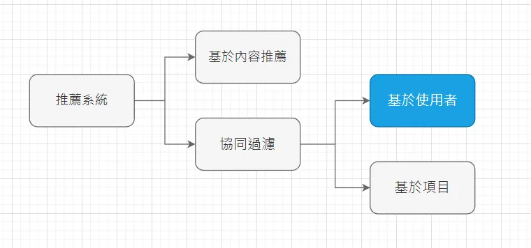
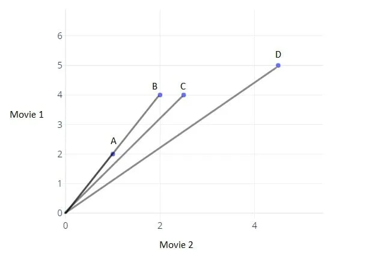
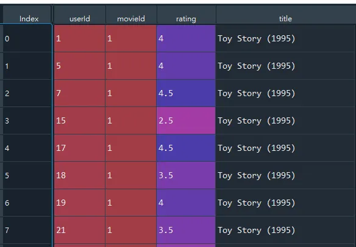
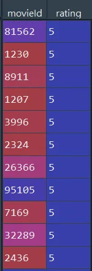

今天我要為各位介紹的是協同過濾的其中一種算法，基於使用者的協同過濾推薦 (User-based Collaborative Filtering)，通過不同用戶對 item 的評分來評測用戶之間的相似性，並基於此相似性做出推薦。
前言
推薦系統可粗分為兩大類，一類是基於內容推薦(Content-based Recommendations, CB)，另一類是協同過濾推薦(Collaborative Filtering, CF)。
基於內容推薦
筆者在 以Python打造簡單實用的電影推薦系統(Content-based Recommendation) 一文中，為各位介紹的便是一種基於內容推薦 (Content-based Recommendations, CB) 的方式，將使用者與電影嵌入在同一個向量空間，按照使用者和電影的相似度，為使用者推薦相似度高的影片，也可以反過來將影片推播給相似度高的用戶。
今天我要為各位介紹的是協同過濾的其中一種算法。

基於使用者的協同過濾推薦(User-based Collaborative Filtering)
什麼是協同過濾(Collaborative Filtering)？根據擁有共同經驗的群體的喜好來推薦使用者感興趣的資訊，最經典的例子就是電影推薦。
我們用以下圖片來說明，圖上散布點分別代表使用者ABCD，X軸和Y軸則分別是使用者對Movie 2和Movie 1的評價，直線之間的夾角愈大，則兩個使用者的相似度愈低；直線之間的夾角愈小，則兩個使用者愈相似。我們發現圖表上顯示使用者A和B代表的直線所構成的夾角幾乎為0，因此表示使用者A和B在對電影的品味上非常接近，如果要推薦影片給使用者A，我們會優先考慮使用者B觀看過且使用者A尚未觀看過的影片來做推薦。

舉個生活上的實際例子，我喜歡《海角七號》、《等一個人咖啡》、《與神同行》；你喜歡《海角七號》、《等一個人咖啡》，因此我們在觀看電影的品味上是相似的，因此合理推測你也會喜歡《與神同行》，這就是協同過濾基本的精神。
綜上所述，在推薦電影給使用者的場景中，基於內容推薦是基於自身歷史觀看紀錄的電影類型，來推測相似的電影；而協同過濾是參考其他相似使用者的經驗，因此有機會挖掘到使用者潛藏的喜歡品項，但是缺點是新的使用者因為觀看紀錄較少，難以匹配合適的相似者，推薦效果較差，這類型的問題也稱為冷啟動。
實現流程
協同過濾算法粗淺來說主要有以下三個步驟：
- 找到與使用者擁有相同電影愛好(相似度高)的人
- 找到該相似使用者們觀看的其他電影
- 將這些相似使用者的平均電影評分最高幾部推薦給該使用者
Python代碼實現
1. 讀取資料
本文採用的資料集與上次雷同，按照慣例，資料集和完整程式碼放置文末。上次實作，我們是利用電影的類型來做為相似度衡量的基準，但在這次我們採用的是使用者對電影的評分，因此先使用drop函數將genres欄位剔除，並將電影的資料與使用者觀看紀錄進行合併，合併結果如下圖所示。
|
|

2. 找到與使用者相似的人
我們以共同觀賞過的電影其評分的相似度作為指標，相似度越高，表示在電影的品味上越接近。例如使用者A對電影1的評分是5、電影2評分是1；使用者B對電影的評分是4.8、電影B評分是0.8，則這兩個使用者是相似的，因為同樣都喜歡電影A、不喜歡電影B。相似度有很多衡量方式，在電影評分的情境上由於我們不在乎絕對值的大小，在意的是方向的差異，因此採用餘弦相似度來衡量 (可以參考筆者撰寫的歐氏距離與餘弦相似度的比較)。
2.1 計算使用者與其他使用者的相似度
在這裡我們借助兩個輔助函式，第一個是 find_common_movie，該函式會取得使用者共同看過的電影ID，之後再利用cal_similarity_for_movie_ratings 輔助函式，計算這些共同看過的電影ID的餘弦相似度，其他使用者ID及相似度分別以 user_ids 和 similarities 表示。
|
|
2.2 取得其他使用者中相似度最高的前n位
為什麼不選擇相似度最高的那位就好？因為越多位推薦的可靠度越高，試想一個跟你一樣品味的人說電影A好看，以及10位跟你一樣品味的人說電影A好看，哪一種推薦效果較好？顯然是後者。
我們使用np.argsort函式針對相似度大小進行排序(注意 np.argsort 是排序結果的索引，並非值)，由於 argsort 排序預設是遞增排序，我們在後面加上 [::-1] 反轉序列，並且取前num位，得到列表變數 most_similar_users ，該使用者與其他使用者最相似的前 num 位 Id。
|
|
3. 找到這群相似者中評價最高的前幾部電影
至此，我們已經找到最相似的前num位使用者，接著便是羅列出這些最相似的使用者已經觀看過，但是該使用者沒有看過的電影，並在這些電影中篩選評價較佳的前幾部作為推薦標的。
具體的做法如下，我們先使用 not_seen_cond 作為該使用者未看過的電影的篩選條件，similar_cond 則是最相似的使用者已經觀看過的電影的篩選條件，兩者篩選條件的交集結果儲存在not_seen_movies_ratings dataframe 中。
|
|
截至目前為止，我們有了最相似的前 num 位使用者的觀看紀錄，我們要從中取得評價最高的幾部影片，一個直觀想法就是將影片評分取平均值，觀察這些最相似的使用者普遍推薦哪部影片。舉個簡單例子就是，你有AB兩個電影共同愛好者，你沒看過《與神同行》，A評價《與神同行》5分，B評價《與神同行》4分，於是就折衷取平均值，以4.5分表示推薦分數。
我們使用 groupby("movieId")，將這些最相似使用者對影片的評分取平均，並用 sort_values 對 ratings 進行遞減排序，藉此找到平均評分中最高的前 top_n 部影片，結果儲存在top_ratings ，推薦結果如圖所示。
|
|

小結
推薦系統的協同過濾，旨在以擁有共同經驗的群體的喜好來推薦使用者感興趣的資訊，算法本身並不困難，相信讀者照著本文流程走，都能快速掌握核心的概念，未來我會繼續講解其他推薦系統的算法，要是讀者有任何疑問都可以告知我，我會盡可能為你解惑的^^。
資料集/完整代碼： Github Code